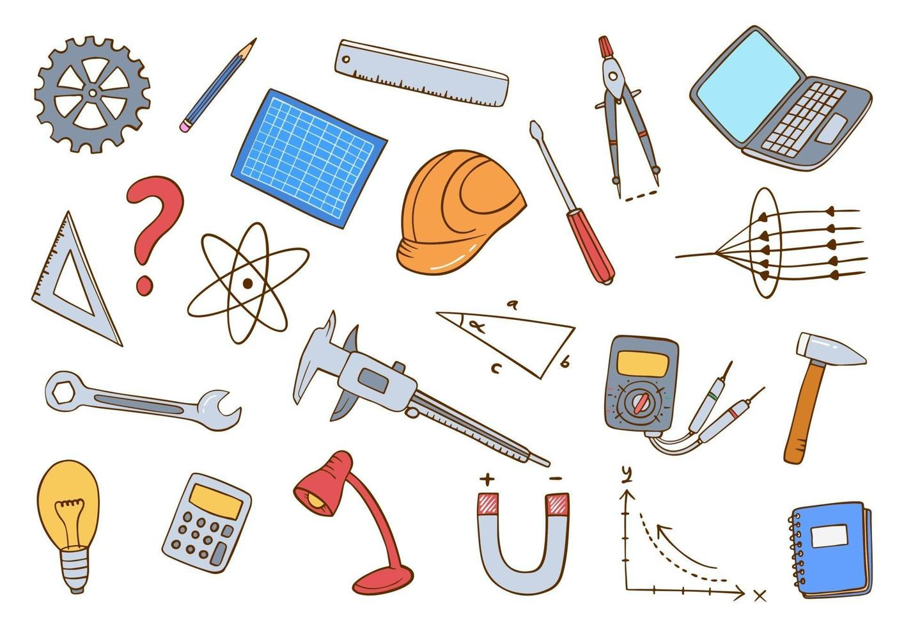
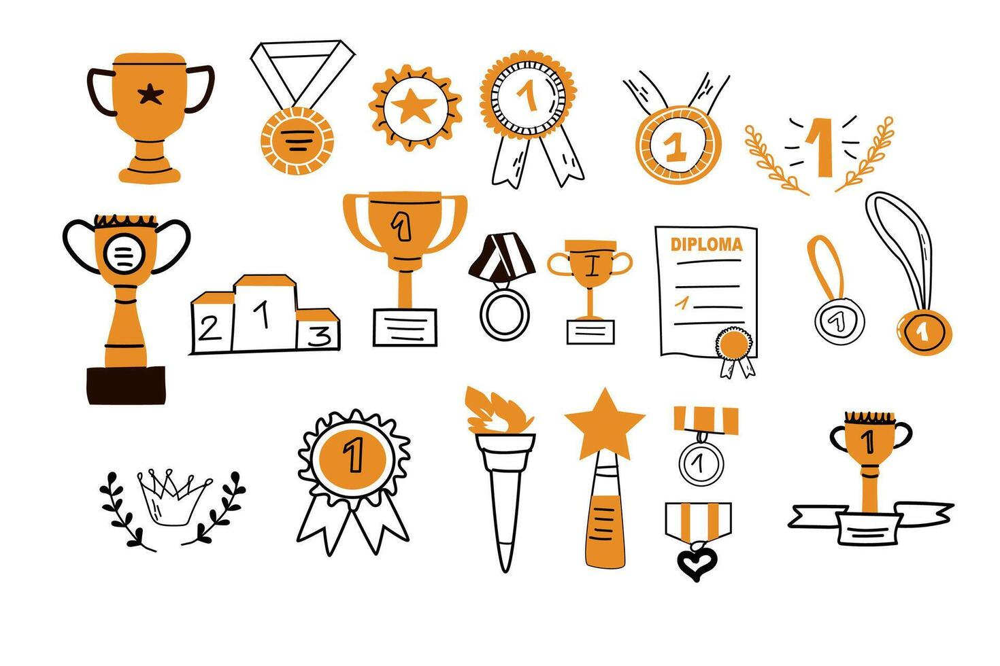

My Experiences
Education

Work

Awards
Volunteering
Certifications
Publications
×
Education
- M.S. in Petroleum Engineering (Reservoir Engineering), Amirkabir University of Technology, 2023–Present
Admitted with Distinction without Entrance Exam, GPA: 18.32/20.00 - B.S. in Computer Engineering, Amirkabir University of Technology, 2021–Present
Dual Degree, GPA: 17.09/20.00 - B.S. in Petroleum Engineering, Amirkabir University of Technology, 2019–2023
GPA: 19.08/20.00 - Diploma in Physics and Mathematics, Aboureyhan High School, 2016–2019
GPA: 19.86/20.00
×
Work
- Research Assistant, Petroleum Engineering Department, Amirkabir University of Technology, 2021–Present
Conducted research on reservoir engineering and machine learning applications. - Teaching Assistant, Petroleum Engineering Department, Amirkabir University of Technology
- Reservoir Fluid Properties, Spring 2022 & Spring 2023
- Oil & Gas Reservoir Engineering (1), Fall 2022 & Fall 2023
- Oil & Gas Production Engineering, Spring 2023
- Well Stimulation, Fall 2023 - Teaching Assistant, Computer Engineering Department, Amirkabir University of Technology
- Fundamentals of Computer Programming (C), Fall 2023
- Applied Linear Algebra, Fall 2023 & Spring 2025
- Data Mining, Spring 2025 - Discrete Mathematics Teacher, Shahid Mahdavi High School, 2020–2021
Taught mathematics to high school students. - Intern, Iranian Central Oil Fields Company (ICOFC), Reservoir Systems Department, Summer 2022
Assisted in reservoir data analysis and simulation. - Intern, Limac Chemical Process Trading Company, Summer 2023
Supported chemical process optimization tasks. - Intern, MAPSA Company, MAPSA Technology Center (MTC), AcidPro Software, Summer 2024
Contributed to software development for acidizing simulations.
×
Awards
- Member of Iran National Elites Foundation, Since 2021
Recognized for academic excellence and research potential. - Distinction in M.S. Admission, Amirkabir University of Technology, 2023
Admitted to M.S. program without entrance exam due to outstanding B.S. performance.
×
Volunteering
- Member of Student Faculty Council, Petroleum Engineering Department, Amirkabir University of Technology, Since 2023
Contributed to departmental initiatives and student representation. - Member of Student Faculty Council, Computer Engineering Department, Amirkabir University of Technology, Since 2023
Supported student advocacy and academic events. - Member of Scientific Association of Petroleum Engineering, Amirkabir University of Technology, 2021–2023
Organized technical workshops and seminars. - Member of Society of Petroleum Engineers (SPE), Amirkabir University of Technology, Since 2022
Participated in professional development and networking events.
×
Certifications
- Proficiency in Reservoir Simulation Software, Amirkabir University of Technology
Skilled in ECLIPSE, PETREL, PVTSIM, and PIPESIM for reservoir and fluid flow simulations. - Programming Proficiency, Amirkabir University of Technology
Advanced skills in C, Assembly, Java, Python, and MATLAB programming.
×
Publications
- Adopting a Residual-Energy-Based Approach to Calculate the Solubility Parameters of n-Alkanes, Chemical Engineering and Technology Journal, March 2022
Third author - Review of RMR System Development Process and Practical Experiences of its Implementation, Scientific Journal of Oil and Gas Exploration and Production, December 2022
Second author - Enhanced Intelligent Approach for Determination of Crude Oil Viscosity at Reservoir Conditions, Scientific Reports Journal, January 2023
First author - Enhanced Machine Learning-Ensemble Method for Estimation of Oil Formation Volume Factor at Reservoir Conditions, Scientific Reports Journal, September 2023
Second author - Well Placement Optimization in Reservoirs Implementing Reservoir Quality Map/Reservoir Opportunity Index Analysis, B.S. Thesis, Petroleum Engineering Department, Amirkabir University of Technology, Summer 2023
- Well Placement Optimization in Fractured Reservoirs Implementing Enhanced Reservoir Opportunity Index, Fractured Reservoir Engineering Course, Petroleum Engineering Department, Amirkabir University of Technology, Fall 2023
- Fracture Network Modeling through Petrophysical Data Integration and Deep/Reinforcement Learning Techniques, Combined M.S. & B.S. Thesis, Petroleum Engineering & Computer Engineering Departments, Amirkabir University of Technology, Since Fall 2024 (Ongoing)